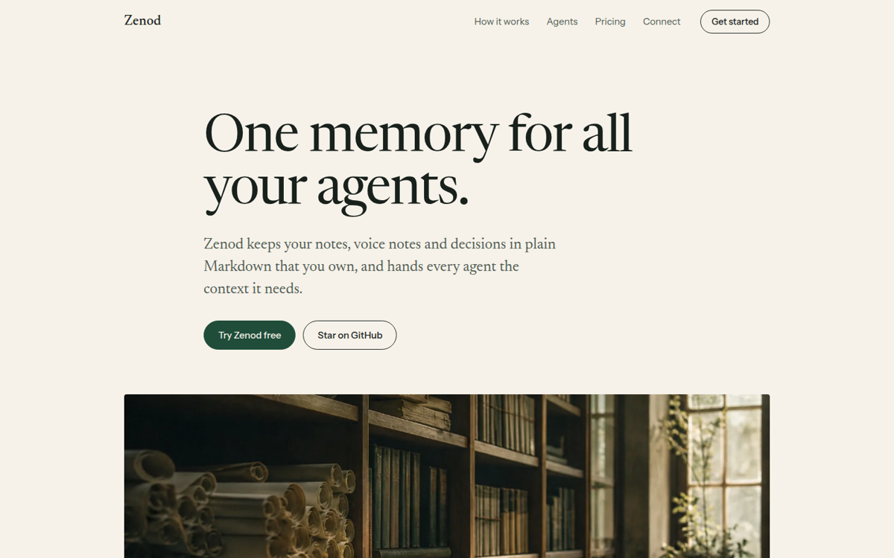
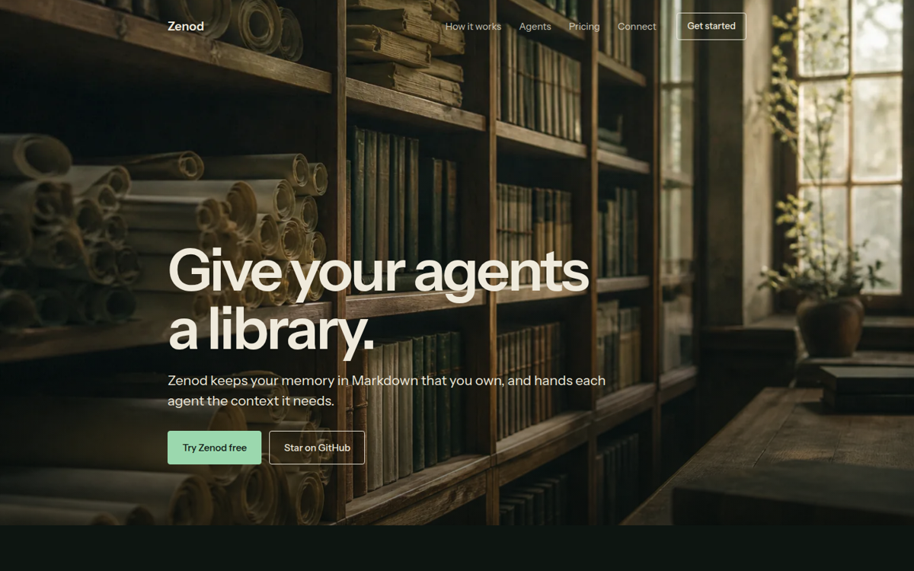
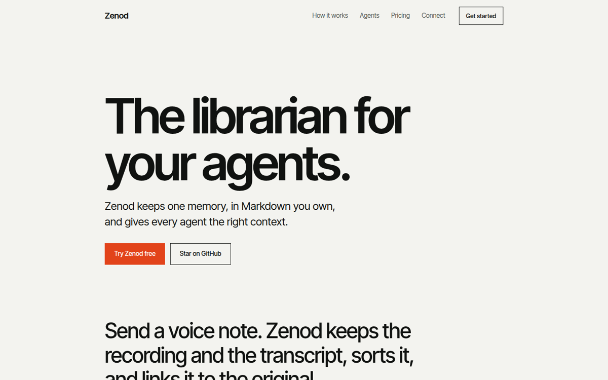

Three ways the Zenod landing could look.
Same facts as zenod.dev (hosted at €9/month + VAT, free self-hosting, WhatsApp, GitHub or Google Drive vault, MCP). Each page is one reading column, two columns at most, and two diagrams at most. The live site is untouched. Open each one on your phone as well.

A. Paper
A calm essay in a serif on warm paper. Photographs carry the mood, and one thin diagram shows the voice-note path.
Good: most distinct from AI-tool sites, easy to read, quiet. Trade-off: least tech-product energy, and long photo bands make the page tall.
Open A
B. Night library
A dark, full-bleed photo hero, short sections and two light-line diagrams (voice note, agents) on deep green.
Good: closest to the current dark look, cinematic, two clear diagrams. Trade-off: most likely to still feel like a dark developer site, and dark is harder to keep light on the eyes.
Open B
C. Plain statements
Text first. Big plain sentences, one per screen, one photograph, one diagram and a price table.
Good: shortest and clearest, fastest to load, least decoration. Trade-off: leans on copy, so it has the least visual identity and no librarian imagery.
Open C